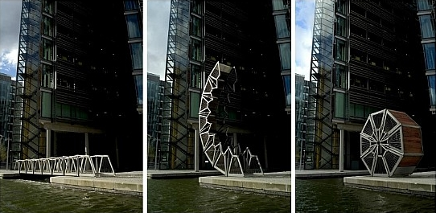
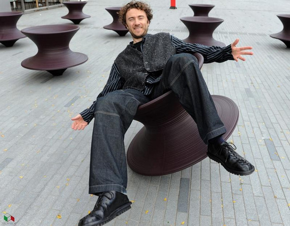
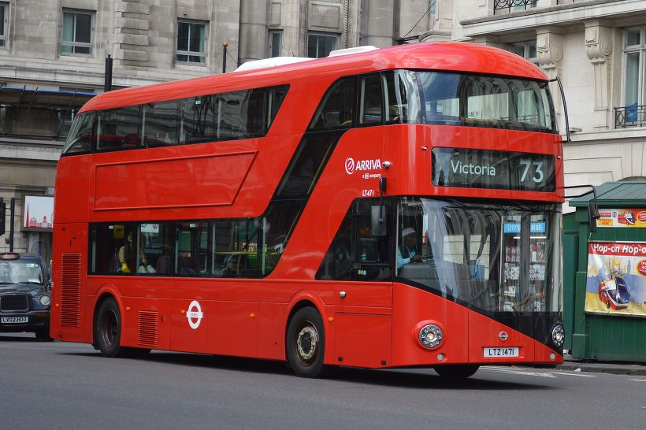
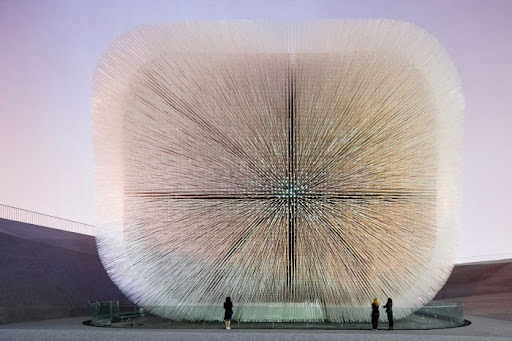

2002 Rolling Bridge
기존 도개교의 개념에서 완전히 벗어난 다리 디자인. 12m 길이에 8개의 마디가 접히는 구조인이 다리는 패딩턴 지역의 명물이 되었다. 독특한 구조만큼이나 다리가 접혀 말리는 움직임도 하나의 볼거리이다. 마치 살아 있는 것처럼 다리가 자신의 몸을 둥글게 말아 올리는 모습은 금요일 정오에만 볼 수 있다.
2007 Spun
이 의자는 평평한 금속판을 회전시켜 입체적인 형태의 의자를 만들 수 있을까? 라는 의문에서 시작했다. 그렇게 만들어진 이 의자는 원 형태의 물체를 제작할 때 사용되는 스피닝 공법을 응용해 무게가 실리는 쪽으로 기울어지고 회전한다. 그 때문에 사람이 앉아서 자신이 원하는 방향으로 계속해서 회전할 수 있다.
2010 New Bus For London
가장 대표적인 그의 디자인은 여러 개가 있지만 그중 가장 친숙하게 볼 수 있는 것은 2010년 영국 런던의 버스 디자인이다. 런던의 2층 버스는 상징성을 가지고 있다. 기존의 런던 버스는 운전적이 있는 앞으로 타서 뒤에 내리는 한국과 비슷한 시스템의 버스였다. 이를 새롭게 만든 헤더윅의 2층 버스는 유모차나 휠체어를 이용하는 사람들이 더 쉽게 이용하고 모든 승객이 빠르게 버스에 올라탈 수 있도록 3개의 문과 2개의 계단을 만들었다. 버스의 길이는 기존보다 조금 길어졌지만 버스의 디자인이 둥글둥글한 느낌이 든다. 실제 버스를 탔을 때도 쉽게 내리고 탈 수 있어서 좋고 버스 안에서도 동글동글한 느낌을 받을 수 있다. 처음 디자인이 발표되었을 때 2층에 창문을 만들지 않아 많은 원성을 사기도 하였다고 한다.
2013 Vessel
베슬 (Vessel)은 이스턴 야드(Eastern Yard)의 광장에 위치한 벌집 모양의 콘크리트와 스틸 재료로 45.7미터 의 공공 건출물이다. 2024년에 최종 준공 예정이다. 15층짜리 나선형 계단 구조물로 전망대라고 할 수 있다. 마치 벌집 모양을 떠올리게 되는 구조물은 1,000명의 사람들이 직접 올라갈 수 있으며, 조형물 안에서 허드슨 야드의 경관을 다양한 각도로 조망할 수 있다.

2010 UK Pavilion
그의 작품 중 빼놓을 수 없는 건축물이자 가장 많이 언급되는 것은 2010년 상하이 박람회에 영국관의 파빌리온 디자인이다. 이 또한 공모를 통해 이루어졌는데 그가 선정되었고 주제는 식물, 민들레였다. 민들레 홀씨처럼 바람 불면 날아갈 거 같은 외관의 디자인을 만들었다. 그는 전시공간인 안이 아니라 밖에서 바라보기 좋은 파빌리온의 디자인으로 많은 이들의 주목을 끌어냈다.
